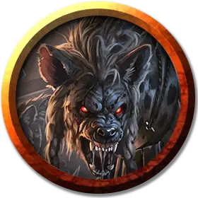

Вожак стаи гноллов
Gnoll Pack Lord
Средний Гуманоид (Гнолл), хаотично-злой

Класс Доспеха 15 (кольчужная рубаха)
Хиты 49 (9к8 + 9)
Скорость 30 футов
| мод | спас | ||
|---|---|---|---|
| СИЛ | 16 | +3 | +3 |
| ЛОВ | 14 | +2 | +2 |
| ТЕЛ | 13 | +1 | +1 |
| мод | спас | ||
|---|---|---|---|
| ИНТ | 8 | −1 | −1 |
| МДР | 11 | +0 | +0 |
| ХАР | 9 | −1 | −1 |
Чувства тёмное зрение 60 футов, пассивное Восприятие 10
Языки Гноллий
Опасность 2 (450 опыта)
Бонус мастерства +2
Среда обитания Лес, Луг, Пустыня, Холмы
Особенности
Буйство. Если гнолл в свой ход опускает рукопашной атакой хиты существа до 0, он может бонусным действием переместиться на расстояние до половины своей скорости и совершить атаку укусом.
Действия
Мультиатака. Гнолл совершает две атаки, либо глефой, либо длинным луком, и использует Разжигание буйства, если может.
Укус. Рукопашная атака оружием: +5 к попаданию, досягаемость 5 футов, одно существо. Попадание: Колющий урон 5 (1к4 + 3).
Глефа. Рукопашная атака оружием: +5 к попаданию, досягаемость 10 футов, одна цель. Попадание: Рубящий урон 8 (1к10 + 3).
Длинный лук. Дальнобойная атака оружием: +4 к попаданию, дистанция 150/600 футов, одна цель. Попадание: Колющий урон 6 (1к8 + 2).
Разжигание буйства (перезарядка 5–6). Одно существо, которое гнолл видит в пределах 30 футов от себя, может реакцией совершить рукопашную атаку, если оно слышит гнолла и обладает особенностью Буйство.
Описание
Стая гноллов возглавляется вожаком, правящим силой и хитростью. Лучшее из награбленного отходит к нему, будь то еда, ценные безделушки или магические предметы. В надеждах получить от Йеногу неуязвимость, он покрывает свое тело пирсингом, нелепыми трофеями и наносит на шерсть демонические печати.
См. дополнительно статью: "Бестиарий: Гноллы"